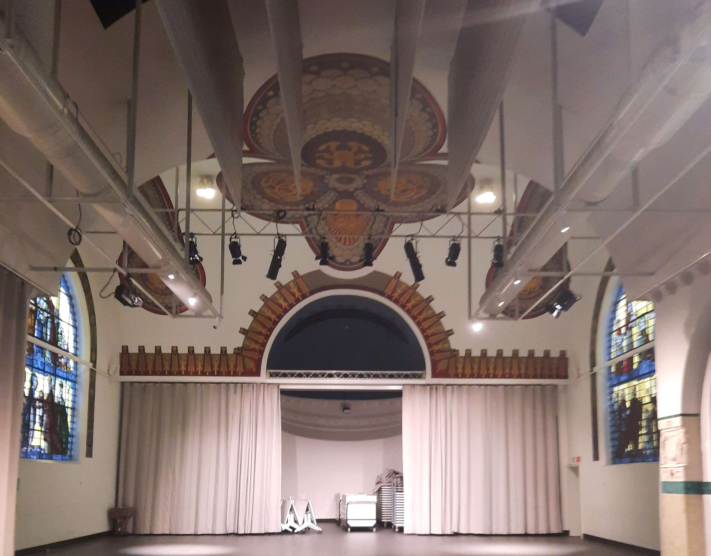

Dag 3: woensdag
interessant
Onze dag begon zoals gewoonlijk om half negen. De eerste dertig minuten mochten we werken aan onze website voor deze observatiestage bij de gemeente Zoersel. Hierna kregen we uitleg over het feit dat de meeste werknemers bij de gemeente Zoersel een computer/laptop nodig hebben, maar dat dit niet voor iedereen geldt. Vervolgens gingen we naar de serverruimte om de Windowsversies van de daar aanwezige computers en hun bouwjaren te bekijken. In de serverruimte werd een vraag gesteld over VLAN (Virtual Local Area Network) en kregen we hier uitleg over. Daarna ontstond er een probleem met Windowswachtwoorden, omdat iemand een speciaal teken probeerde te gebruiken dat niet is toegestaan bij Windowswachtwoorden. Nadat we dit hadden opgelost, bekeken we verschillende Microsoft-licenties en kregen we uitleg over raamcontracten. Dat was het laatste wat we deden voor de middagpauze. Nadat deze was afgelopen, gingen we naar de kapel om een podium af te breken en op te ruimen. Tot slot konden we observeren hoe een nieuwe SQL Server-database werd opgesteld.
